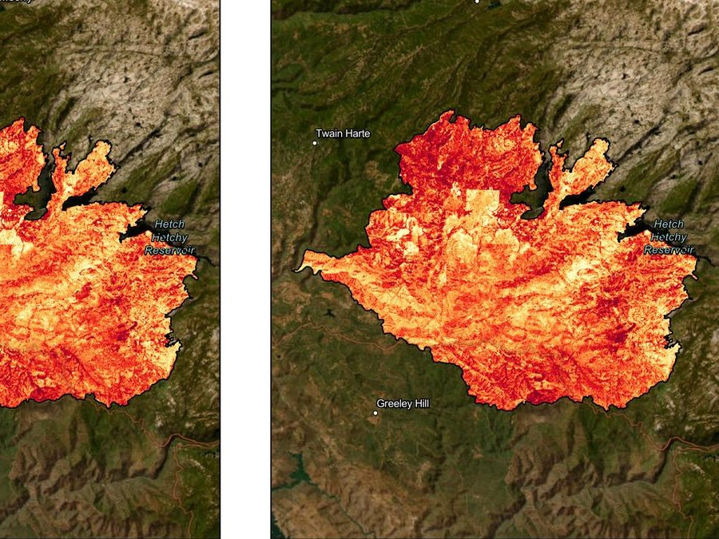
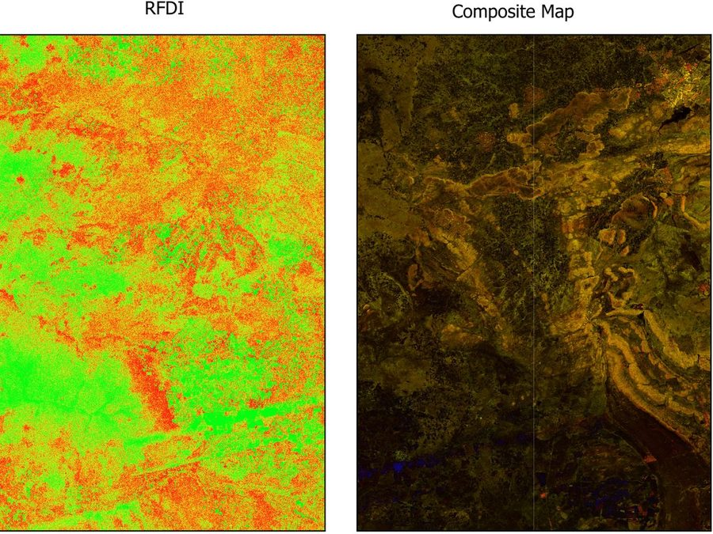
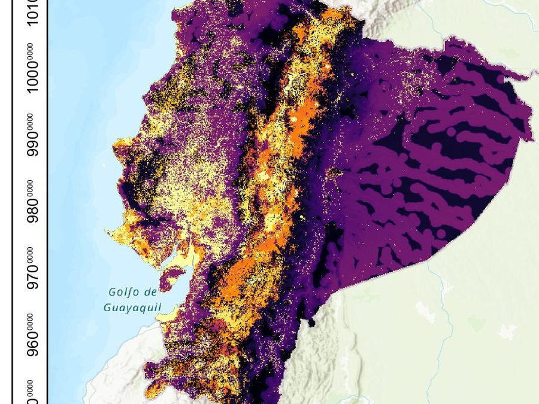
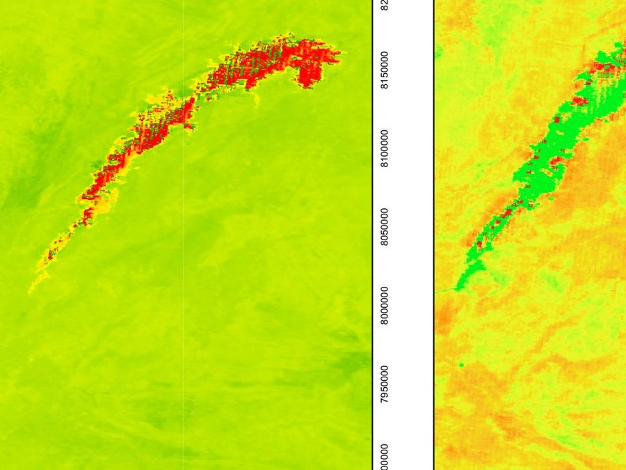
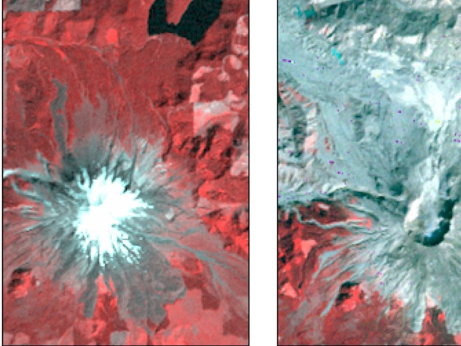

- Rim Fire burn severity
- Post-fire vegetation recovery
- Boston Creek watershed and runoff modelling
- Grizzly bear movement corridors
- Vegetation and surface water at Lake Kariba
- Radar mapping in southeastern Botswana
- Global productivity hotspots
- Habitat suitability and uncertainty
- Norton, Zimbabwe: a map of home
- Campus asset management at Upper Daniel Heights
- Mount St. Helens, before the eruption to today
-

Remote sensing · Fire ecology
Rim Fire burn severity
-

Remote sensing · Fire recovery
Post-fire vegetation recovery
-
Hydrology · Watershed modelling
Boston Creek watershed and runoff modelling
-

Field GIS · Asset management
Campus asset management at Upper Daniel Heights
-

Spatial ecology · Least-cost modelling
Grizzly bear movement corridors
-

Remote sensing · Radar
Radar mapping in southeastern Botswana
-

Spatial modelling · Habitat
Habitat suitability and uncertainty
-

Remote sensing · Vegetation and water
Vegetation and surface water at Lake Kariba
-

Remote sensing · Global analysis
Global productivity hotspots
-

Remote sensing · Landscape change
Mount St. Helens, before the eruption to today
-

Cartography · Land use
Norton, Zimbabwe: a map of home